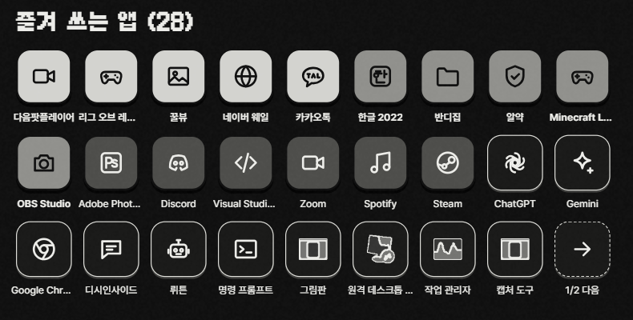
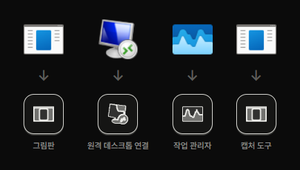
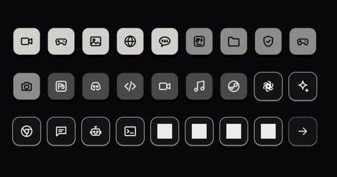
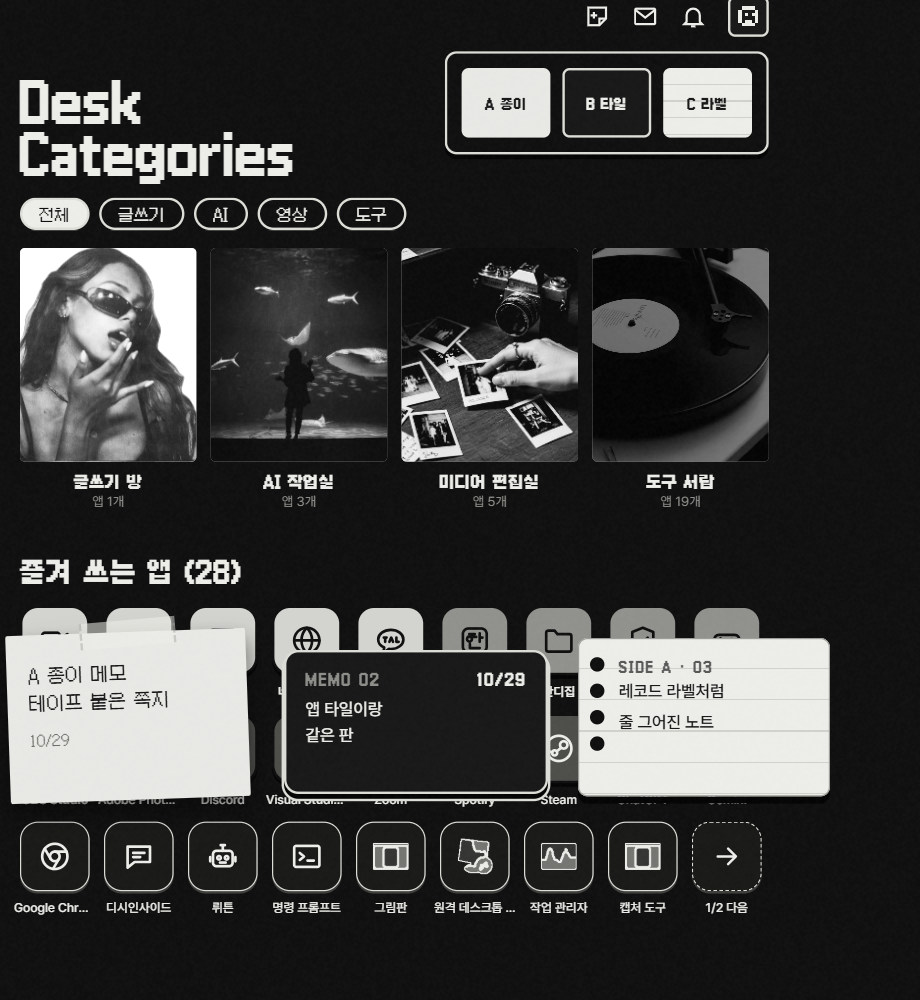
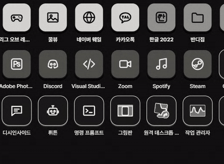

클릭 한 번에
내 앱들이 흑백 턴테이블로
내가 쓰던 바탕화면을 누구나 바로 쓸 수 있게 만든 거예요. 설치.bat 한 번 누르면 내 바탕화면 앱들이 알아서 이 디자인으로 싹 바뀌어요.
설치.bat 한 번앱 아이콘 자동메모 3종전기 아끼기지우면 원래대로
↓ 받으러 가기 (GitHub · Download ZIP)
1깔면 알아서 되는 것
- 움직이는 배경 프로그램(Lively)이 없으면 같이 깔아 줘요
- 원래 바탕화면 아이콘은 숨기고(파일은 그대로) 흑백 아이콘으로 싹 바꿔요
- 카톡·롤·스팀 같은 흔한 앱 300개쯤은 전용 디자인, 처음 보는 앱은 원래 아이콘을 흑백으로
- 글쓰기 / AI / 영상 / 도구로 알아서 묶어요
- 자주 쓰는 앱일수록 더 밝고 앞쪽에 와요
- 새로 깐 앱도 알아서 들어와요

자주 쓰는 앱일수록 밝게

처음 보는 앱 = 진짜 아이콘(위) → 흑백(아래)
2누르면 이렇게 돼요
- 아이콘 — 마우스 올리면 통통 튀고(또잉), 누르면 앱이 켜져요
- 턴테이블·재생 버튼 — 레코드판 멈춤 / 돌기
- ◀ ▶ · 왼쪽 메뉴 · 분류 칸 · 사진 카드 · 섞기 — 앱 종류별로 보기
- 시계·파형 막대 — 지금 시간 + 오늘 하루가 얼마나 지났는지
- 앱이 많으면 → 다음으로 넘기기, 문서는 맨 끝 바탕화면 칸으로 폴더 열기

마우스 올리면 또잉
3바탕화면 메모

오른쪽 위 메모 버튼 → 종이 · 타일 · 라벨
- 보통 메모장처럼 끌어서 골라 지우기 · 복붙(Ctrl+C/V) · 되돌리기(Ctrl+Z) 다 돼요
- 끌어서 옮기고, 두 번 눌러야 떼어져요
- 치는 대로 자동 저장 — 컴 껐다 켜도 그대로

"안녕하세요 에활갤..." → 통째로 골라 지우고 → "아니 애용갤러들아"
4전기 아끼기
- 노트북 충전기 뽑으면 움직이는 효과만 멈춰요 (앱 켜기·메모는 그대로)
- 게임이나 영상을 전체 화면으로 틀면 배경이 알아서 쉬어요
- 바탕이 거의 검은색이라 OLED 화면이면 전기를 덜 먹어요
5설치 (3분)
- 위 받으러 가기 → 초록색 Code 버튼 → Download ZIP → 압축 풀기
- 설치.bat 더블클릭 (파란 창 뜨면 추가 정보 → 실행, 관리자 창은 예)
- 끝!
Win + D로 바탕화면 보기
앱 직접 넣기: 맨 끝 '바탕화면' 칸 → 열린 폴더에 바로가기를 끌어다 놓기 → 20초쯤 뒤 아이콘이 생겨요
6안전함? · 지우는 법
- 내 컴 안에서만 돌아가서 정보나 메모가 밖으로 안 나가요
- 폴더 안 제거.bat 누르면 원래 바탕화면으로 싹 돌아오고, 쓴 메모는 문서 폴더에 따로 남아요